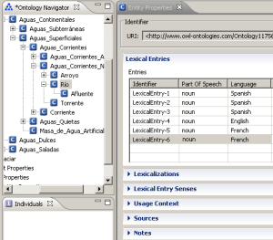
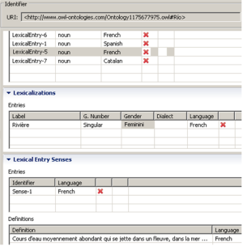

")
")
LIR - Linguistic Information Repository
LIR es un modelo de propiedad lingüístico que será publicado y utilizado con ontologías de dominio. En sí mismo, ha sido implementado como una ontología en OWL. El LIR cubre un subconjunto de elementos léxicos y terminológicos de las descripciones que reflejan la realización lingüística de una ontología de dominio en los diferentes lenguajes naturales. Por lo tanto, su propósito principal es asociar la información multilingüe a las ontologías, con el objetivo de contribuir a la Ontology Localization Activity.

Figure 1. Diagrama UML del moedlo LIR.l
La información léxica y terminológica capturada en la LIR se organiza alrededor de la clase LexicalEntry, como se muestra en la Figura 1. LexicalEntry se considera una unión de formas de la palabra (Lexicalization) y significado (Sense). Esta estructura se ha inspirado en el Lexical Markup Framework (LMF) del estándar ISO. El cumplimiento de esta norma es importante por dos razones principales: (a), se pueden establecer enlaces a diccionarios modelados de acuerdo a esta norma, y (b) LIR puede ampliarse de forma flexible con las extensiones modulares de LMF para modelar aspectos lingüísticos específicos, tales como la morfología o la sintaxis profunda, que no están presentes en LIR en su etapa actual.El resto de las clases que componen LIR son Language, Definition, Source, Note y UsageContext. Estos pueden ser vinculados a las clases Lexicalization y Sense. Cada lexicalización está asociada a un sentido. La clase Sense representa el significado del concepto de ontología en un idioma determinado. Se ha modelado como una clase vacía con el fin de garantizar la interoperabilidad con otras normas y señalar a los recursos externos que describen ese sentido. El significado del concepto en una lengua determinada (que no se solapan completamente con la descripción formal del concepto en la ontología) es "materializado" en la clase Definition, es decir, se expresa en lenguaje natural. El UsageContext nos da información acerca de cómo la palabra se comporta sintácticamente en una lengua determinada por medio de ejemplos ilustrativos. Source information,la fuente de información, se puede conectar a cualquier clase en el modelo para realizar un seguimiento de la procedencia de la información. Por último, en la clase Note se ha intentado incluir cualquier información acerca de las especificidades del lenguaje, connotaciones, estilo, registro, etc. Mediante la determinación de la lengua de un LexicalEntry, podemos hacer que el sistema muestre sólo la información lingüística asociada a la pertenencia a una ontología determinado idioma.
La versión actual de LIR es soportado por el sistema LabelTranslator, un plugin de NeOn Toolkit. Tan pronto como una ontología se importa en NeOn Toolkit, el conjunto de clases capturado en LIR se asocia automáticamente a cada elemento de la ontología, específicamente, a las clases de la ontología y propiedades, por medio de la relación hasLexicalEntry. De esta manera, el resto de las clases lingüísticas organizadas en torno a la clase LexicalEntry están vinculadas a un elemento de la ontología.
La figura 2 muestra una instantánea de hydrOntology, una ontología del dominio Hidrográfico, y la información lingüística multilingüe asociada a sus clases. En este ejemplo, la clase del Río cuenta con 6 entradas léxicas asociadas a ella en diferentes lenguas naturales.

Figure 2. Extracto de la clase Río de hydrOntology y sus LexicalEntries relacionadas.

Figure 3. Lexicalization, Lexical Entry Senses y Definitions pertenecientes a LexicalEntry-5
LabelTranslator NeOn Toolkit plugin ha sido creado para automatizar el proceso de Ontology Localization. Ontology Localization consiste en adaptar una ontología a las necesidades de una comunidad concreta lingüística y cultural, tal como se definen en el Glosario de Neon. Actualmente, los idiomas soportados por el plug-in son el español, inglés y alemán. Una vez que las traducciones se obtienen para las etiquetas de la ontología original, se almacenan en el modelo LIR. Sin embargo, si el sistema no es compatible con la combinación de idiomas que nos interesa, podemos usarlo como referencia de la API de LIR implemetada en el NeOn Toolkit. En este sentido, se puede introducir manualmente la información lingüística necesaria para nuestros propósitos.
El NeOn Toolkit se puede descargar desde www.neon-toolkit.org. Una vez instalado, siga las instrucciones para utilizar el plugin LabelTranslator.
Para instalar el plugin LabelTranslator, es necesario seguir los pasos que se enumeran a continuación: Seleccione " NeOn Toolkit Update Site " y haga clic en Finalizar. El sitio de actualización verificará las nuevas funcionalidades. Una lista de plug-ins disponibles se mostrará organizada por temas. LabelTranslator se muestra bajo de la categoría " Development ". Seleccione LabelTranslator y haga clic en Siguiente:
- Open Neon Toolkit.
- In the Help menu click "Software Updates" --> "Find and Install".
- An Install/Update window will appear.
- If the plugin has been installed before, click: "Search for update"
- If that is not the case, choose: "Search for new features"
- Select "Neon Toolkit Update Site" and click Finish
- Select "LabelTranslator" under "Development", and click next
- Select "Agree" in the license agreement
- Select "Finish" in the installing window